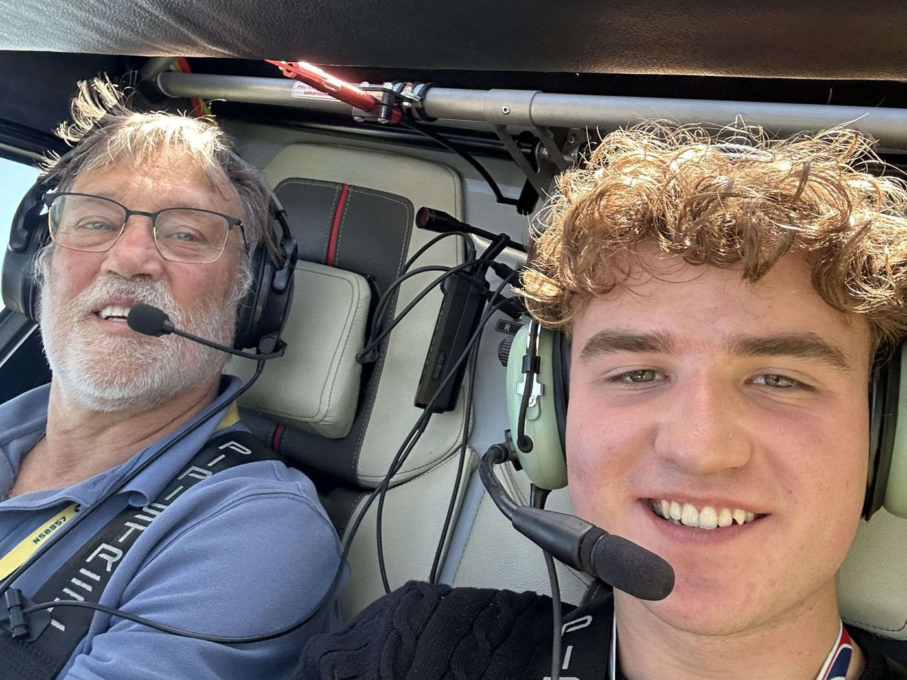

BETA Technologies
Airborne Software Engineering Intern
May – Aug 2026 · South Burlington, VT
- Designed and built a Hardware Development Kit (HDK) for verification and validation of airborne software on the TI AM263 MCU, used directly by a team of 5+ engineers.
- Developed and validated drivers for I2C, UART, and SPI communication; debugged an I2C ACK/NACK fault using a logic analyzer and JTAG.
- Built drivers via the MCU+ SDK to interface with FRAM and flash memory ICs; used a flash programming tool to configure compiled binaries and bootloader images.
- Wrote a Python API for an Analog Discovery 3 logic analyzer / waveform generator to capture I2C/UART/SPI protocol data and generate analog waveforms for test.
- Designed a relay circuit for MCU and peripheral power control and built a GUI + API for remote HDK power control; used MATLAB/Simulink to design an RC low-pass filter for PWM-based analog waveform generation.
- Wrote J-Link test scripts to set breakpoints at program symbols and resume execution, supporting early bring-up of the HDK's V&V environment.
